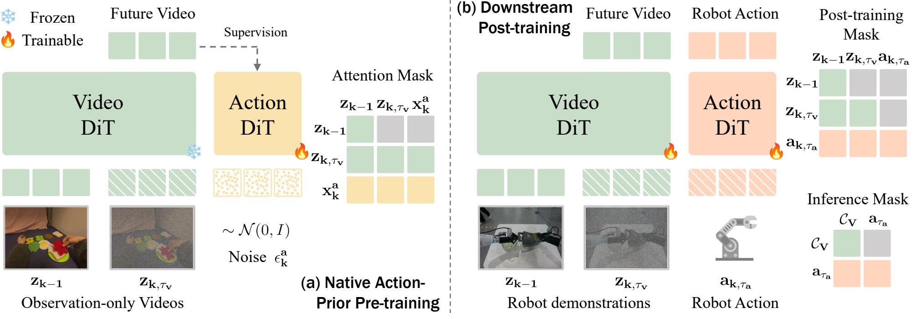
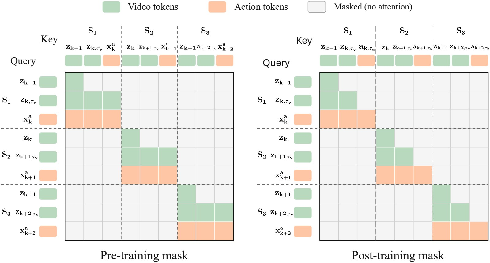
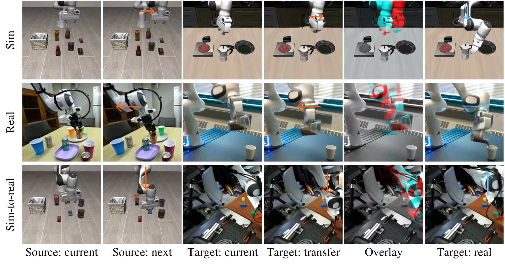
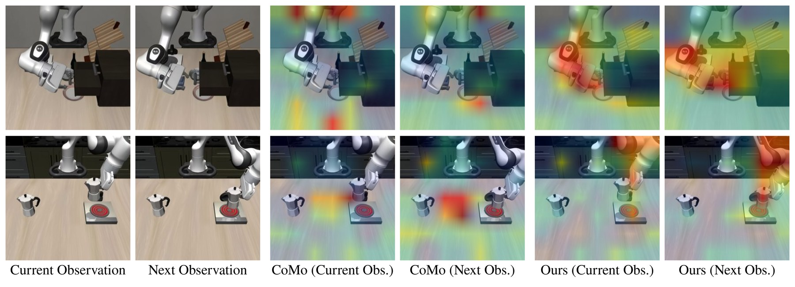

NAVA-WAM pretrains the action policy directly from observation-only videos — no intermediate visual representation, no separate latent-action model.
The DROID-post-trained policy runs on a physical Franka FR3 without any task-specific fine-tuning. Each clip shows the third-person view, with the wrist camera inset.
| Model | ms / call | T1 | T2 | T3 | Avg (%) |
|---|---|---|---|---|---|
| π0.5 | 195.7 | 0/5 | 5/5 | 3/5 | 53.3 |
| DreamZero | 3523.9 | 0/5 | 5/5 | 5/5 | 66.7 |
| NAVA-WAM (ours) | 379.2 | 4/5 | 5/5 | 5/5 | 93.3 |
Five trials per task, 15 trials total. ms / call is server-side latency per policy call on a single H100; normalizing by the number of actions executed per replanning step gives 15.8 ms per executed action for NAVA-WAM, versus 24.5 ms for π0.5 and 146.8 ms for DreamZero.
The largest gap is on T1, which requires placing the cube to the left of the bowl. NAVA-WAM succeeds in 4/5 trials while both baselines fail all five. In all ten baseline trials the cube is localized and grasped correctly — the failure is in grounding the instructed spatial relation, not in perception or manipulation.
World action models integrate future visual dynamics with robot action prediction, but their scalability remains limited by the need for action-annotated robot trajectories. Observation-only videos contain rich evidence about interaction dynamics, but existing approaches typically use them either to pretrain visual representations that must later be adapted for control, or to infer latent actions that are subsequently grounded to robot commands.
We present NAVA-WAM, which introduces native action-prior learning by directly pre-training the action policy from observation-only videos, avoiding indirect representation-to-control transfer or a separate latent-action model. Our training consists of two stages. First, we pretrain on observation-only videos, where future-video flow-matching supervision over visual transitions is propagated through transition-structured joint attention to optimize the Action-DiT and learn action-relevant priors. Second, we use action-labeled demonstrations to post-train the Action-DiT for robot control through joint video–action flow matching, while asymmetric attention decouples the visual branch from iterative action denoising and enables efficient action-only inference.
Extensive experiments show that NAVA-WAM consistently outperforms prior approaches under both in-distribution and out-of-distribution evaluation, while demonstrating strong action-label efficiency and effective real-robot generalization. These results establish native action-prior learning as an effective approach to directly pretrain action policies from observation-only videos, providing a scalable path beyond action-labeled robot data.

For each visual transition, we build a segment holding the clean preceding state, a noised future state, and a group of Action-DiT tokens. A transition-structured joint attention mask lets the Action-DiT read both visual states (an implicit inverse-dynamics path) while the noised future tokens attend back to the Action-DiT representations (an implicit forward-dynamics path). Because the Video-DiT is frozen, minimizing the future-video flow-matching loss updates the Action-DiT only through this joint-attention pathway. The Action-DiT sees the future only in its noised form, which rules out the shortcut of copying the clean prediction target.
Action-labeled demonstrations adapt the pretrained Action-DiT to continuous control via joint video–action flow matching. Here we make the cross-stream attention asymmetric: the Video-DiT no longer attends to the action stream, so its keys and values can be computed once and cached. After a single joint forward pass, iterative denoising runs through the Action-DiT alone, giving closed-loop control without ever rendering a future video.

NAVA-WAM maintains strong in-domain control while substantially improving out-of-domain generalization.
| Method | LIBERO | LIBERO-Plus |
|---|---|---|
| Direct action policies | ||
| π0 | 94.1 | 53.6 |
| π0-FAST | 85.5 | 61.6 |
| StarVLA-α | 96.5 | 77.0 |
| π0.5 | 96.9 | 77.4 |
| ABot-M0 | 98.6 | 80.5 |
| World action models | ||
| JEPA-VLA | 96.4 | 25.6 |
| Fast-WAM | 97.6 | 51.5 |
| Image-WAM | 98.4 | 83.1 |
| Being-H0.7 | 99.2 | 82.1 |
| NAVA-WAM (ours) | 99.0 | 83.5 |
| Method | Clean | Random |
|---|---|---|
| Direct action policies | ||
| DP | 28.0 | 0.6 |
| RDT | 34.5 | 13.7 |
| π0 | 46.4 | 16.3 |
| UP-VLA | 52.9 | 15.2 |
| World action models | ||
| Fast-WAM | 71.9 | 6.3 |
| BagelVLA | 75.3 | 20.5 |
| HALO | 80.5 | 26.4 |
| Image-WAM | 85.0 | 37.6 |
| MV-WAM | 84.0 | 55.7 |
| NAVA-WAM (ours) | 88.5 | 73.6 |
Average success rate (%). LIBERO and RoboTwin Clean measure in-domain performance; LIBERO-Plus and RoboTwin Random evaluate out-of-domain generalization. On RoboTwin 2.0, NAVA-WAM improves over the strongest baseline by 4.5 points on Clean and 17.9 points on Random, with a much smaller Clean-to-Random drop. All RoboTwin training uses Clean-domain demonstrations only.


All episodes below come from the Random (out-of-domain) split, evaluated with a policy trained only on Clean-domain demonstrations.
Each clip shows the head camera (left) and the two wrist cameras (right).
The two representative failures occur during fine-grained grasping and contact-rich manipulation. In Move Can Pot, the reaching motion knocks the can over instead of establishing a stable grasp; the arm then executes the transport motion with an empty gripper without re-attempting the grasp, and the episode eventually reaches its step limit. In Hanging Mug, the policy completes the initial pick sub-goal, lifting the mug with the left arm and placing it beside the rack, but the right arm fails to continue the task by lifting the mug onto the rack, and the episode eventually reaches its step limit.
Together, these cases suggest that failures can arise during fine-grained, contact-rich interactions even when the target object and overall task progression are correctly identified. In both examples, the policy fails to recover from a local execution error, causing it to propagate into task failure.
@article{an2026navawam,
title = {Native Action-Prior Learning from Videos for World Action Models},
author = {An, Zhaochong and Zhang, Fei and Jia, Menglin and Frost, Duncan and
Zhou, Zijian and Wang, Yikai and Wang, Xudong and Patel, Aditya and
Zeng, Belinda and Xiang, Tao and Belongie, Serge and Bar, Amir and He, Sen},
journal = {arXiv preprint},
year = {2026}
}